2025-2026学年七年级数学上学期第一次月考卷
提升卷·参考答案
一、选择题（本大题共10小题，每小题3分，共30分）
题号 | 1 | 2 | 3 | 4 | 5 | 6 | 7 | 8 | 9 | 10 |
答案 | B | C | D | B | D | B | D | B | B | C |
二、填空题（本大题共6小题，每小题3分，共18分）
11． 
 /
/

12．线动成面
13．“戴”/戴
14．圆锥
15．288
16．2或4
三、解答题（第17，18，19，20题，每题6分；第21，22，23题，每题8分；第24，25题，每题12分；共9小题，共72分）
17．
【详解】（1）解：原式


 ；..........3分
；..........3分
（2）解：
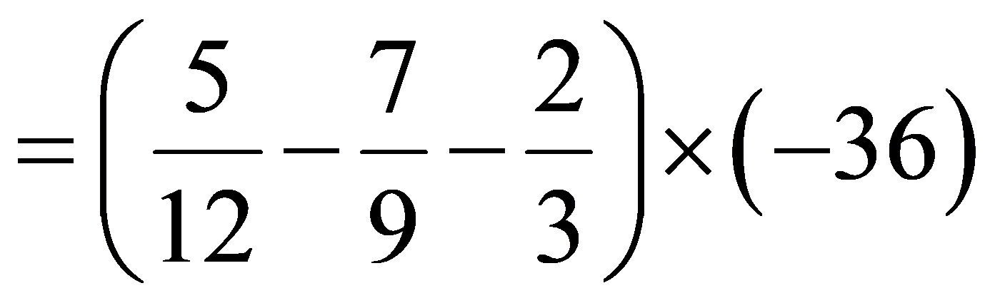

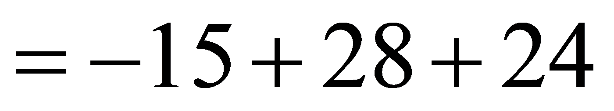
 ．..........6分
．..........6分
18．
【详解】解： ，
， ，−−−1.5=−1.5，
，−−−1.5=−1.5， ，
， ，..........3分
，..........3分
在数轴上表示如下：
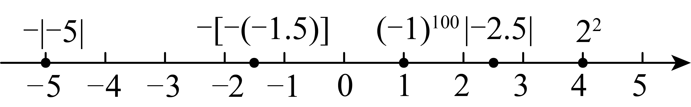
..........6分19．
【详解】解：如图，
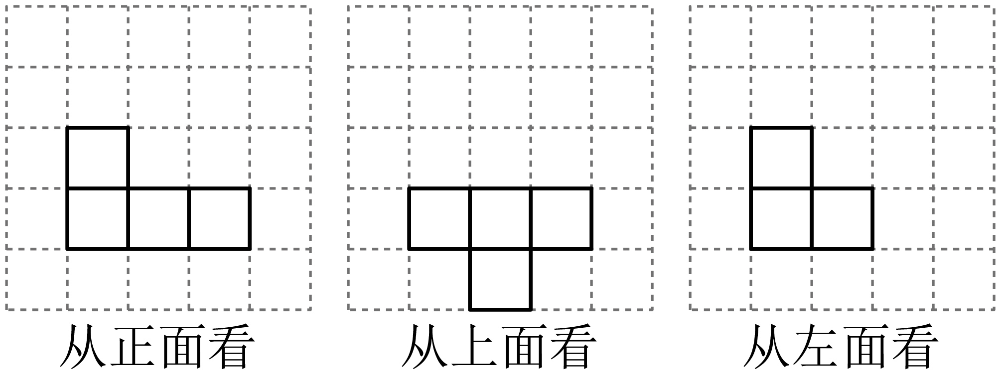
..........6分20．
【详解】（1）解：该几何体的名称是圆柱，其底面半径为1，
故答案为：圆柱；1；..........2分
（2）该几何体的侧面积为： ；
；
该几何体的体积 ．..........6分
．..........6分
21．
【详解】（1）解：
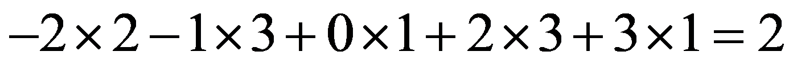
（千克），答：这10袋大米的总重量与标准总重量相比，多2千克；.........4分
（2）这10袋大米的总重量是：
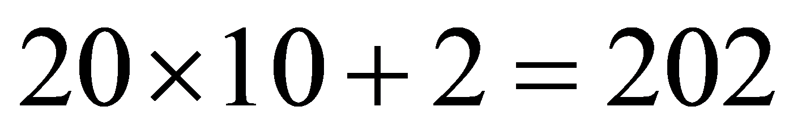
（千克）， （元），
（元），
答：食堂购进大米总共花1010元．..........8分
22．
【详解】（1）解：
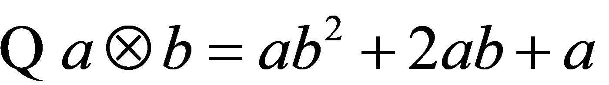
∴3⊗−1=3×−12+2×3×−1+3=3−6+3=0..........3分
（2），
∴−1⊗2⊗5
=−1×22+2×−1×2+−1⊗5
=−4−4−1⊗5
=−9⊗5
=−9×52+2×−9×5+−9
=−9×25−90−9
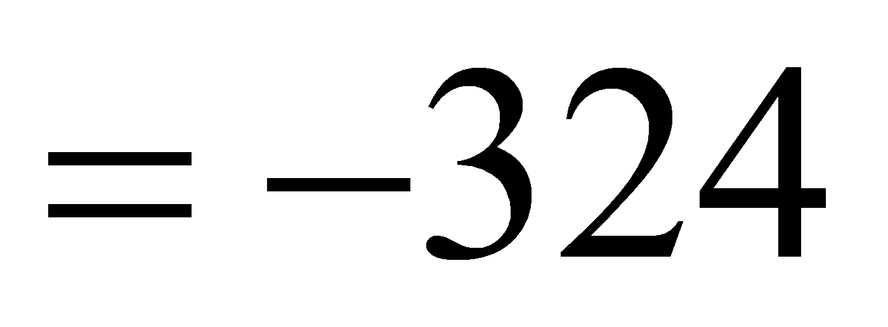
．..........8分23．
【详解】（1）解：四边形绕虚线旋转一周得到立体图形，说明面动成体．
故答案为：③．..........2分
（2）由题意，旋转沿正方形的一边，旋转后立体图形可看作底面半径为 、高为
、高为
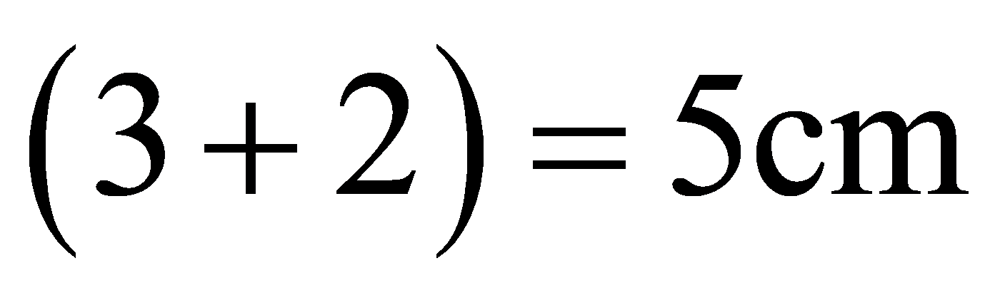
的圆柱，减去一个底面半径为、高为 的圆锥．
的圆锥．圆柱体积
圆锥体积
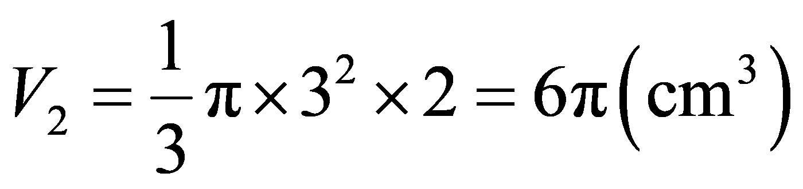
．总体积
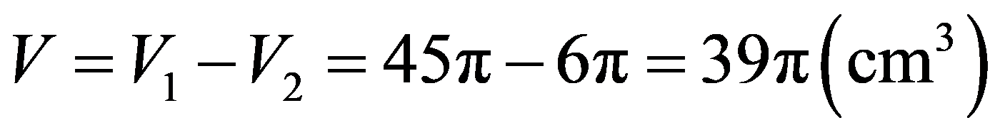
．答：得到的立体图形的体积为 ．..........8分
．..........8分
24．
【详解】（1）解：填表如下：
多面体 | V | F | E |
|
四面体 | 4 | 4 | 6 | 2 |
长方体 | 8 | 6 | 12 | 2 |
五棱柱 | 10 | 7 | 15 | 2 |

..........4分
（2）解：多面体的顶点数V、棱数E、面数F满足关系式： ；..........7分
；..........7分
（3）解：不会有一个多面体，它有10个面，30条棱，20个顶点，
∵假如会有，
则，
根据题意：将V=20,F=10,E=30代入得，V+F−E=20+10−30=0， ，与矛盾，
，与矛盾，
∴不会有．..........12分
25．
【详解】（1）
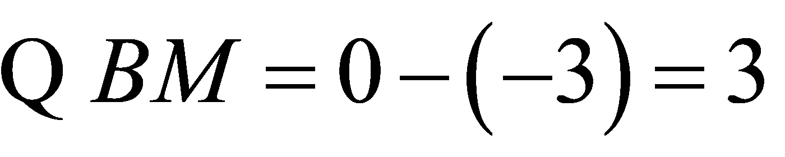
， ，
， ，
，
∴点 是点
是点 的“倍分点”；
的“倍分点”；
故答案为：；..........3分
（2）解：
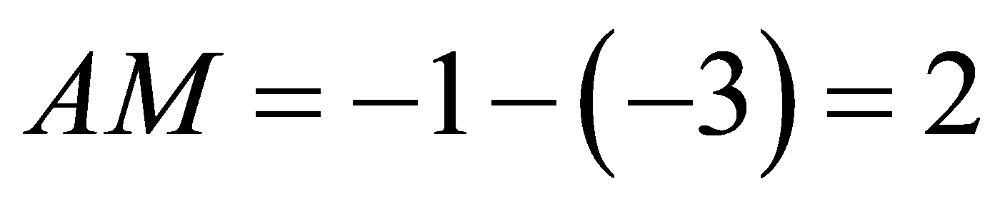
，设 点对应的数值为
点对应的数值为 ，
，
①当
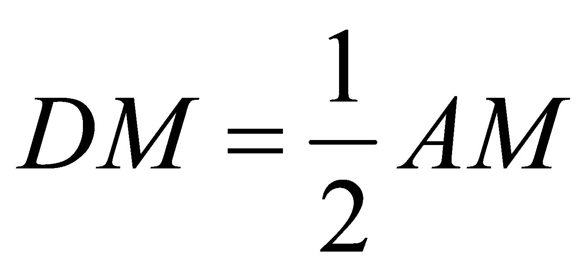
时， ，
，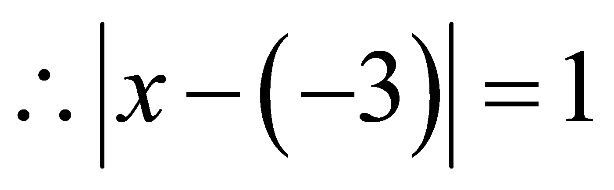
，解得： 或
或 ；
；
②当 时，
时， ，
，
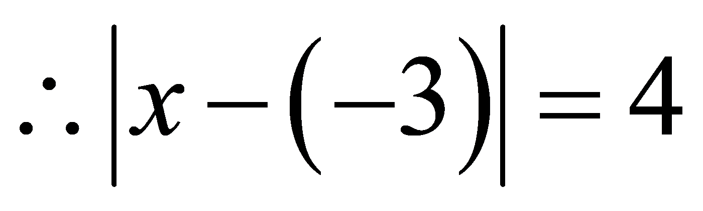
，解得： 或
或 ；
；
综上所述，则点对应的数分别是 ,
, ，
，
故答案为： ；..........7分
；..........7分
（3）解： ，
，
当
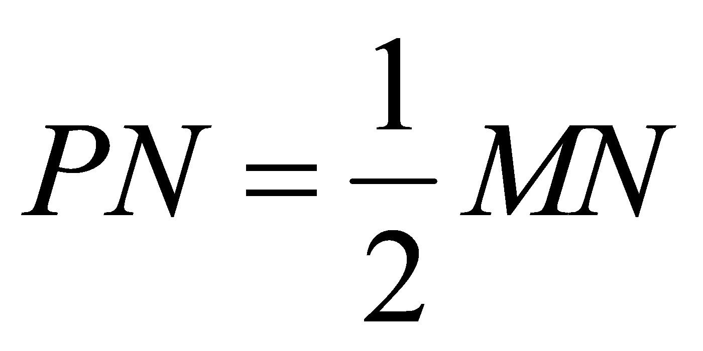
时， ，
，∵点 在点
在点 的右侧，
的右侧，
∴此时点表示的数为 ，
，
当
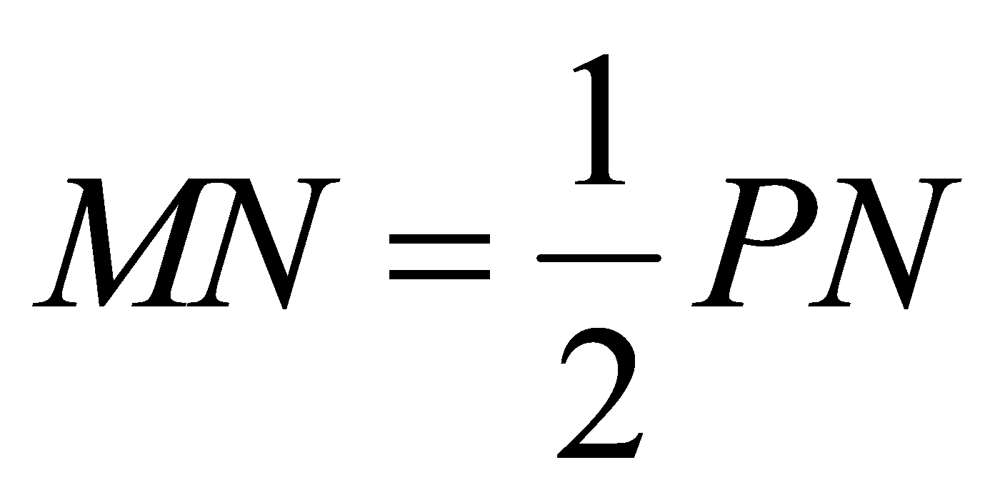
时，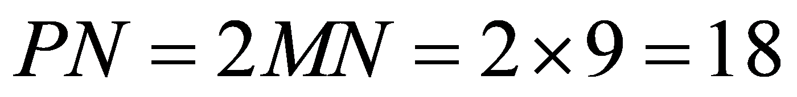
，∵点在点的右侧，
∴此时点表示的数为 ，
，
综上所述，点表示的数为
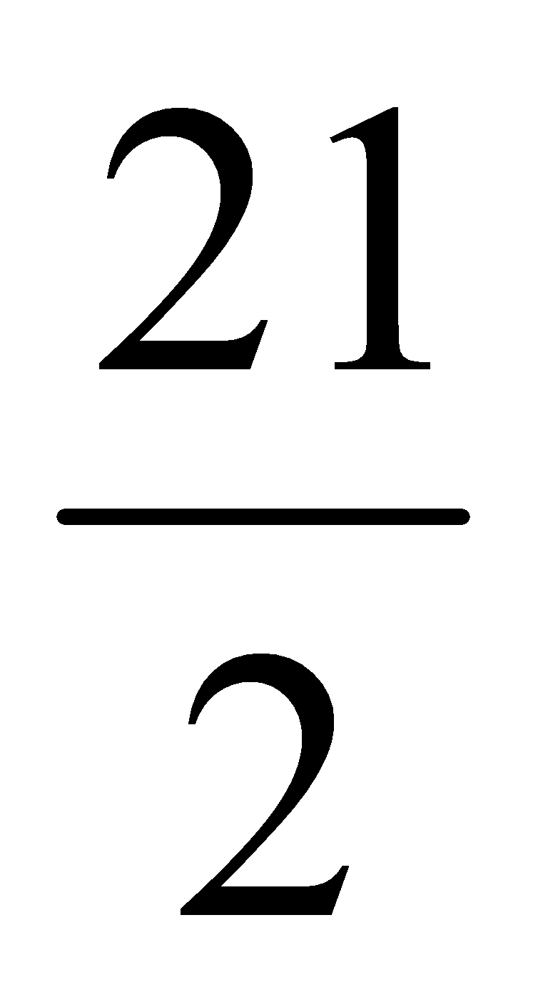
或 ．..........12分
．..........12分